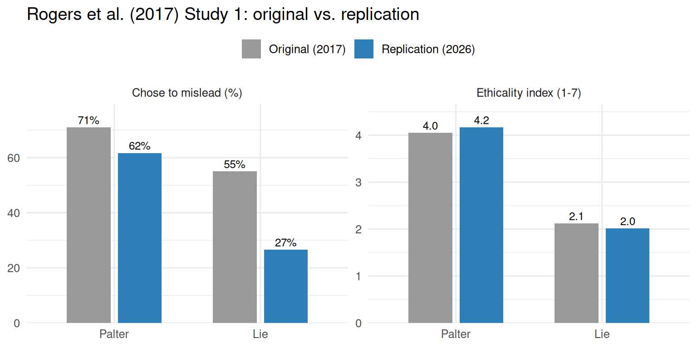

Replication of the Preference for Paltering (Study 1) of Rogers, Zeckhauser, Gino, Norton & Schweitzer (2017, Journal of Personality and Social Psychology)
Author
Ke Fang fangke@stanford.edu
Published
June 8, 2026
Introduction
Rogers, Zeckhauser, Gino, Norton, and Schweitzer (2017) introduced paltering — the active use of truthful statements to create a misleading impression — as a distinct form of deception, sitting between lying by omission (passive) and lying by commission (active and false). The central question of their Study 1 was whether people prefer to palter rather than lie outright, even when outright lying is more profitable. Participants played the seller’s role in an incentivized used-car negotiation in which a problem with the car was common knowledge to the seller. They chose between honestly disclosing the problem and sending a misleading reply. The misleading reply was a palter (truthful but misleading) in one condition and an outright lie (lie by commission) in the other. Crucially, the lie was made more lucrative than the palter — it carried a higher stated probability of completing the sale, which will reward the participants with $1 more, so that choosing the lying outright less often than paltering reveals a willingness to sacrifice expected value in order to maintain self-image.
The target findings selected for replication were the three reported in Study 1. First (the key analysis of interest, H1), a larger proportion of participants chose to mislead when the misleading option was a palter than when it was an outright lie. Second (H2), participants judged the palter option to be more ethical than the lie option. Third, the effect of condition on the choice to mislead was mediated by these ethicality perceptions.
Methods
Power Analysis
The binding test is the choice-rate difference (H1). The original proportions (71% palter vs. 55% lie) correspond to Cohen’s h = 0.333. A closed-form power analysis for the two-proportion comparison (confirmed by three convergent methods: arcsine pwr.2p.test, base-R power.prop.test, and a χ² effect-size route on the 2×2) required 142, 190, and 234 completers per cell for 80%, 90%, and 95% power, respectively (284 / 380 / 468 total). The ethicality t test (d ≈ 1.39) needs only ~10–15 per cell, and the mediation — powered by Monte Carlo simulation, with the joint-significance scan confirmed against a nonparametric bootstrap of a·b — saturates well below the H1 requirement (~75 per cell). H1 therefore drives the design. A sensitivity analysis showed the requirement climbs steeply if the true effect is smaller than the original (e.g., ~503 per cell at 90% if the palter rate were 0.65). Balancing this against feasibility on Prolific, we powered for 90% (the more conservative floor given the sensitivity result), giving a target of 380 completers.
Power
Choice rate — H1 (binding)
Ethicality — H2
Mediation
Total target
80%
142 / cell
~10 / cell
~75 / cell
284
90%
190 / cell
~12 / cell
~75 / cell
380
95%
234 / cell
~15 / cell
~75 / cell
468
Planned Sample
Planned sample: n = 380 eligible completers (90% power for the original H1 effect). We recruited online via Prolific (launch target ~448 participants) and used a fixed recruitment target as the termination rule (collect to the recruited n, then close). The sampling frame was Prolific’s US adult, English-fluent participant pool, with balanced random assignment to the two conditions. The only preselection rule was a comprehension screen administered before the dependent measure (see Procedure); participants who failed were routed out and not asked to make a choice.
Materials
Materials were reproduced verbatim from Rogers et al. (2017, Study 1) and implemented in Qualtrics; the full text appears in the original article, its supplement, and our shared survey file. In paraphrase: participants read a scenario in which they were selling a used car with a known starting problem in cold weather (the car had previously needed mechanic repairs to start, including at low temperatures), and received a prospective buyer’s email asking specifically about cold-weather performance. They then chose between three pre-written replies (the two relevant to their condition were shown): an honest disclosure that stated the car had needed a mechanic’s repairs to start; a palter, a truthful-but-misleading statement emphasizing how smoothly the car drives and that it recently started in very cold weather; and an outright lie, “This car has never had problems.” Each reply carried a stated probability of completing the sale — 30% (honest), 60% (palter), 80% (lie) — and a real $1.00 bonus was paid out by lottery conditioned on the chosen reply’s probability, exactly as in the original. After choosing, participants rated the misleading option they had been offered on three 7-point items (deceptive, honest, ethical), matching the original Study 1 measure.
Verbatim, the buyer asked “Has this car ever had problems?”, and the reply options were followed precisely:
Honest disclosure (both conditions): “Twice in the last year this car would not start and both times I had to have a mechanic fix it.” Lie by commission: “This car has never had problems.” Palter: “This car drives very smoothly and is very responsive. Just last week it started up with no problems when the temperature was −5 degrees Fahrenheit.”
Procedure
We followed the original procedure. Participants were randomly assigned to the palter or lie-by-commission condition, read the scenario, and completed a two-item comprehension check (the seller’s goal; which statement was not true of the car); only those who passed both items continued to the choice. They then made the incentivized choice between the honest disclosure and the condition’s misleading reply, rated that misleading reply on the deceptive/honest/ethical items, and had the bonus lottery resolved. Finally they answered a probability-memory check, an open-ended question about their reasoning, an explicit AI-use disclosure item, and demographics. Two procedural elements were counterbalanced (see Differences): the on-screen order of the two reply options, and the order of the rating block versus the bonus block.
Analysis Plan
The analysis follows the original as closely as the modern toolchain allows, on the analysis-eligible sample (below). The key analysis of interest is H1.
H1 (choice rate, confirmatory): the difference in the proportion choosing to mislead, palter vs. lie, tested with a Pearson χ²(1) on the 2×2 table (equivalently the two-proportion z test), reported with Cohen’s h, the odds ratio, and a 95% CI on the proportion difference. Support requires p < .05 with the palter rate exceeding the lie rate.
H2 (ethicality, confirmatory): an ethicality index computed as the mean of the honest and ethical items and the reverse-coded deceptive item, compared between conditions with a Welch t test (Cohen’s d). Reliability is assessed with Cronbach’s α (overall and by condition); if overall α < .70, the index is replaced by three item-level single-mediator models (Bonferroni-corrected).
Mediation: condition → ethicality → choice, with the binary choice declared ordered and fit by WLSMV (probit). The indirect effect is tested two ways, as in the original’s spirit: a Monte Carlo confidence interval (primary) and a bias-corrected (BCa) bootstrap (the analog of the original’s Sobel–Goodman bootstrap). Because the probit coefficients are not on the original’s logit scale, the replication target is the sign and significance of the indirect effect, not its magnitude.
Exclusions / data cleaning: non-finishers; comprehension-check failures (routed out before the DV); participants who explicitly disclosed AI use (keyword-flagged, then manually reviewed so that denials are retained); and duplicate Prolific IDs (retaining the first complete eligible response). reCAPTCHA scores and Qualtrics’ fingerprint duplicate flag are retained for inspection but, because they are not part of the original exclusion criteria, are not used to define the confirmatory sample (they are examined in an exploratory robustness check).
Differences from Original Study
The core manipulation, stimuli, incentive structure, and dependent measures were preserved. Known differences:
Sample and setting. Recruited via Prolific in 2026, rather than the original’s sample. Online, incentivized, single session in both cases.
Comprehension gate. Failures are routed out before the choice, so screen-outs contribute no DV data. This improves data quality but means an “unscreened” H1 is not directly recoverable; we judged the quality benefit worth this deviation.
Counterbalancing added. The two reply options were presented in randomized order, and the rating block and bonus-lottery block were presented in randomized order. The ratings-first arm matches the original’s fixed order; the bonus-first arm is novel and is examined as an exploratory order effect.
Deceptiveness anchoring. In the original raw instrument the deceptiveness item was anchored inconsistently across conditions; we anchored it uniformly (1→7) and reverse-coded it uniformly in analysis.
Mediation estimator. We used lavaan WLSMV/probit for the categorical-outcome mediation rather than the original’s logistic Sobel–Goodman bootstrap, and target the sign/significance of the indirect effect.
None of these differences is anticipated to eliminate the effect; the original article’s logic does not hinge on the sample source, presentation order, or estimator, and the manipulation itself is unchanged.
Methods Addendum (Post Data Collection)
Actual Sample
Prolific recorded 415 responses (launch target ~448). Of these, 396 finished the survey and 380 also passed the two-item comprehension screen and made a choice; excluding 4 participants who explicitly disclosed AI use left 376 analysis-eligible participants (lie n = 188, palter n = 188), with the conditions and the rating/bonus order balanced. The full attrition was: 19 non-finishers, 16 comprehension failures, and 4 explicit AI-use disclosures (the 11 flagged duplicate Prolific IDs had already been excluded by other criteria). Demographics (eligible sample): age 19–79 (median 45); gender 189 female, 181 male, 5 non-binary/third gender, 1 self-described.
Differences from pre-data collection methods plan
None of substance. AI keyword flags were resolved by the preregistered manual review (emphatic denials retained, only affirmative disclosures excluded), exactly as planned.
Results
Data preparation
Data preparation followed the analysis plan (full pipeline in script/01_clean.Rmd): we imported the Qualtrics export keyed by stable question IDs, marked duplicate Prolific IDs and then discarded the identifier to de-identify the file, parsed the 7-point ratings (the choice-text export encodes the scale endpoints as text labels, which we converted back to integers so the strongest responses were not lost), reverse-coded deceptiveness and formed the ethicality index, scored the comprehension and probability-memory items, flagged AI disclosures and duplicates, and defined the eligibility flag. The cleaned file retains every response (incompletes and duplicates included, flagged rather than dropped); the confirmatory sample is the subset with analysis_ok == TRUE.
Confirmatory analysis
The analyses specified in the analysis plan, on the preregistered sample (N = 376).
H1 — choice rate. More participants chose to mislead when the misleading option was a palter (61.7%) than when it was an outright lie (26.6%) — a 35.1-percentage-point difference, 95% CI [25.7, 44.5], Cohen’s h = 0.72, odds ratio = 4.45 [2.87, 6.89], χ²(1) = 47.0, p < .001. The original reported 71% vs. 55%, χ²(1) = 14.58, p < .001. The effect replicated in the predicted direction and was, if anything, larger.
2-sample test for equality of proportions without continuity correction
data: c(tab["palter", "1"], tab["lie", "1"]) out of c(sum(tab["palter", ]), sum(tab["lie", ]))
X-squared = 46.984, df = 1, p-value = 7.158e-12
alternative hypothesis: two.sided
95 percent confidence interval:
0.2571619 0.4449658
sample estimates:
prop 1 prop 2
0.6170213 0.2659574
## Cohen's h and the odds ratio (Haldane-corrected if a zero cell), as in 02_analysis.Rmdp1 <-mean(prereg$misleading[prereg$condition =="palter"])p2 <-mean(prereg$misleading[prereg$condition =="lie"])or_tab <-if (any(tab ==0)) tab +0.5else tabOR <- (or_tab["palter", "1"] * or_tab["lie", "0"]) / (or_tab["palter", "0"] * or_tab["lie", "1"])se <-sqrt(sum(1/ or_tab))round(c(cohens_h =2*asin(sqrt(p1)) -2*asin(sqrt(p2)),OR = OR, OR_lo =exp(log(OR) -1.96* se), OR_hi =exp(log(OR) +1.96* se)), 3)
cohens_h OR OR_lo OR_hi
0.723 4.447 2.872 6.885
H2 — ethicality of the misleading option. The palter option was rated far more ethical than the lie option (palter M = 4.17, SD = 1.46; lie M = 2.01, SD = 1.45), difference 2.15 [1.86, 2.45], Cohen’s d = 1.48, t(374) = 14.3, p < .001. The original reported M = 4.05 vs. 2.12, d = 1.39 — essentially identical.
xp <- prereg$ethics_index[prereg$condition =="palter"]xl <- prereg$ethics_index[prereg$condition =="lie"]t.test(xp, xl) # Welch t test (palter - lie)
Welch Two Sample t-test
data: xp and xl
t = 14.348, df = 373.97, p-value < 2.2e-16
alternative hypothesis: true difference in means is not equal to 0
95 percent confidence interval:
1.857501 2.447464
sample estimates:
mean of x mean of y
4.166667 2.014184
Reliability gate. The three-item index was reliable overall (Cronbach’s α = 0.87) and within each condition (palter α = 0.80, lie α = 0.83; original 0.79 and 0.88), with inter-item correlations of .64–.74. Because overall α ≥ .70, the index-based analyses were used as planned, and the pre-specified fallback — three item-level single-mediator models (Bonferroni-corrected) — was not triggered.
items <- prereg[, c("honest", "ethical", "decep_rev")]psych::alpha(items)$total$raw_alpha # overall raw alpha
Mediation — condition → ethicality → choice. Fit in lavaan with the binary choice declared ordered (WLSMV/probit). The indirect effect was positive and significant by both pre-specified methods: the primary Monte Carlo CI was [0.376, 0.679], and the bias-corrected bootstrap CI (BCa, 2,000 resamples — the analog of the original’s Sobel–Goodman bootstrap) was [0.328, 0.765], both excluding zero (standardized indirect ≈ 0.24). The direct path remained substantial (c′ ≈ 0.40, probit), indicating partial mediation — perceiving the palter as more ethical accounts for part, but not all, of the elevated tendency to mislead. The original reported a significant indirect effect under a logistic model with a Sobel–Goodman bootstrap; the replication matches in sign and significance under both CI methods.
med <-' ethics_index ~ a*condition_num misleading ~ b*ethics_index + cp*condition_num indirect := a*b total := indirect + cp'## Point estimates + Monte Carlo CI (primary), WLSMV / probitfit <-sem(med, data = prereg, ordered ="misleading", estimator ="WLSMV")parameterEstimates(fit, standardized =TRUE) |> dplyr::filter(label %in%c("a", "b", "cp") | lhs =="indirect")
set.seed(42)monteCarloCI(fit, nRep =20000)["indirect", ] # primary indirect-effect CI
est ci.lower ci.upper
indirect 0.522 0.376 0.679
## Bias-corrected (BCa) bootstrap of the indirect effect -- the analog of the## original's Sobel-Goodman bootstrap. lavaan requires a (D)WLS estimator for## se = "bootstrap"; DWLS yields the SAME point estimates as WLSMV. (Slow: 2,000 refits.)set.seed(42)fit_boot <-sem(med, data = prereg, ordered ="misleading",estimator ="DWLS", se ="bootstrap", bootstrap =2000)
Warning: lavaan->lav_options_set():
information will be set to "expected" for estimator = "dwls"
effect est boot_lo boot_hi
1 indirect 0.522 0.328 0.765
Side-by-side with the original. Both target effects, replication vs. original — the misleading-choice rate (H1) and the ethicality index (H2) by condition:
rep_vals <- prereg |>group_by(condition) |>summarise(choice =mean(misleading) *100, ethics =mean(ethics_index), .groups ="drop")comp <-bind_rows(tibble(panel ="Chose to mislead (%)", study ="Original (2017)",condition =c("Palter", "Lie"), value =c(71, 55)),tibble(panel ="Chose to mislead (%)", study ="Replication (2026)",condition =c("Palter", "Lie"),value =c(rep_vals$choice[rep_vals$condition =="palter"], rep_vals$choice[rep_vals$condition =="lie"])),tibble(panel ="Ethicality index (1-7)", study ="Original (2017)",condition =c("Palter", "Lie"), value =c(4.05, 2.12)),tibble(panel ="Ethicality index (1-7)", study ="Replication (2026)",condition =c("Palter", "Lie"),value =c(rep_vals$ethics[rep_vals$condition =="palter"], rep_vals$ethics[rep_vals$condition =="lie"]))) |>mutate(condition =factor(condition, levels =c("Palter", "Lie")),lab =ifelse(panel =="Chose to mislead (%)",paste0(round(value), "%"), sprintf("%.1f", value)))ggplot(comp, aes(condition, value, fill = study)) +geom_col(position =position_dodge(0.7), width =0.6) +geom_text(aes(label = lab), position =position_dodge(0.7), vjust =-0.4, size =3.2) +facet_wrap(~ panel, scales ="free_y") +scale_y_continuous(expand =expansion(mult =c(0, 0.12))) +scale_fill_manual(values =c("Original (2017)"="grey60", "Replication (2026)"="#2c7fb8")) +labs(x =NULL, y =NULL, fill =NULL,title ="Rogers et al. (2017) Study 1: original vs. replication") +theme_minimal(base_size =12) +theme(legend.position ="top")

Exploratory analyses
Three follow-ups, none preregistered as confirmatory.
(i) Robustness across sample definitions. We re-ran the three confirmatory analyses — the H1 Pearson χ², the H2 Welch t test, and the WLSMV/probit mediation (with both the Monte Carlo and the BCa bootstrap CI) — on three pre-specified alternative samples: recall-pass (both probability-memory items correct), ratings-first (only the arm whose rating block preceded the bonus, matching the original’s fixed order), and quality-clean (reCAPTCHA ≥ .5 and not flagged as a Qualtrics duplicate). H1 and H2 held in every sample (table below). The mediation also held throughout: the standardized indirect effect stayed positive (0.19–0.26) with both the Monte Carlo and the bootstrap CI excluding zero in all four samples (full per-sample mediation table, including bootstrap CIs, in script/02_analysis.html).
(ii) Order effect. A 2 (condition) × 2 (rating/bonus order) linear model on the ethicality index, lm(ethics_index ~ condition * rating_bonus_order), on the preregistered sample. The presentation order had no main effect (bonus-first b = −0.11, p = .62) and did not interact with condition (b = 0.20, p = .51); the condition effect was large (b = 2.06, p < .001). This supports the validity of the novel bonus-first arm and the rating measure.
summary(lm(ethics_index ~ condition * rating_bonus_order, data = prereg))
Call:
lm(formula = ethics_index ~ condition * rating_bonus_order, data = prereg)
Residuals:
Min 1Q Median 3Q Max
-3.1215 -0.9606 -0.4000 0.8785 5.0394
Coefficients:
Estimate Std. Error t value
(Intercept) 2.0667 0.1495 13.820
conditionpalter 2.0549 0.2109 9.742
rating_bonus_orderbonus_first -0.1061 0.2126 -0.499
conditionpalter:rating_bonus_orderbonus_first 0.1983 0.3007 0.660
Pr(>|t|)
(Intercept) <2e-16 ***
conditionpalter <2e-16 ***
rating_bonus_orderbonus_first 0.618
conditionpalter:rating_bonus_orderbonus_first 0.510
---
Signif. codes: 0 '***' 0.001 '**' 0.01 '*' 0.05 '.' 0.1 ' ' 1
Residual standard error: 1.458 on 372 degrees of freedom
Multiple R-squared: 0.3558, Adjusted R-squared: 0.3506
F-statistic: 68.48 on 3 and 372 DF, p-value: < 2.2e-16
(iii) Probability memory. The proportion correctly recalling the condition-specific success probability of the misleading response (60% palter / 80% lie) and the 30% honest-response probability, by condition. Recall was high (roughly 89–94% correct), indicating participants attended to the incentive manipulation. The one notable departure from the original was a much lower willingness to lie outright in the lie condition (26.6% vs. the original 55%).
The confirmatory result replicated successfully. Participants chose to mislead substantially more often when the misleading option was a palter than when it was an outright lie (61.7% vs. 26.6%), χ²(1) = 47.0, p < .001 — the same direction as Rogers et al.’s original effect (71% vs. 55%) and larger in magnitude. The secondary results also replicated: the palter option was judged much more ethical than the lie option (d = 1.48, vs. the original d = 1.39), and the choice effect was partially mediated by ethicality perceptions (a significant positive indirect effect, confirmed by both the Monte Carlo and the bias-corrected bootstrap CI). By every preregistered criterion, this is a clear replication of Study 1.
Commentary
The effect was, if anything, stronger than the original, and the reason is informative: paltering remained common (61.7%, near the original 71%), but willingness to lie outright collapsed (26.6%, down from 55%) — even though lying was the more lucrative option (an 80% vs. 60% chance of the sale). This widens the palter–lie gap to 35 points (vs. 16 in the original) and sharpens the paper’s core claim that people will sacrifice expected value to avoid bald-faced lies. A consequence is that the study was over-powered: it was sized for the original effect (h = 0.333) but observed roughly twice that (h ≈ 0.72).
The differences from the original appear unlikely to be moderators. The effect held across every sample definition we examined, the added presentation-order counterbalancing had no detectable influence, and the comprehension gate and Prolific sampling are not conditions the original or subsequent work identifies as necessary for the effect. The lower lie rate could plausibly reflect platform or cohort differences (a 2026 Prolific sample), heightened sensitivity to honesty norms, or social-desirability pressure in the disclosure context; these are speculative and, importantly, do not bear on the direction or significance of the replicated effect. We are not aware of objections from the original authors specific to this attempt; the materials, incentives, and measures were preserved as faithfully as the platform allowed.